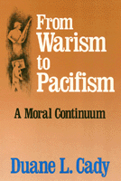

Exposes the pervasive, subconscious warism that is the dominant ideology in modern Western culture
Exposes the pervasive, subconscious warism that is the dominant ideology in modern Western culture


 Exposes the pervasive, subconscious warism that is the dominant ideology in modern Western culture
Exposes the pervasive, subconscious warism that is the dominant ideology in modern Western culture

|  |
From Warism to PacifismA Moral ContinuumDuane L. Cadypaper EAN: 978-0-87722-779-3 (ISBN: 0-87722-779-9) |
"The book is strong when it exposes our culture’s uncritical acceptance of war, when Cady shows that violent means are not likely to result in pacific ends and that peace has a harmonic and cooperative content and is not merely the absence of war .A worthy contribution to the discussion of the morality of war."
—Choice
Duane Cady views warism and pacifism as polar extremes on a continuum that embraces a full spectrum of ethical positions on the morality of war and peace. Realizing that he could not intellectually defend the notions of just-war theory, he found that he was a reluctant pacifist, a discovery that spurred this exploration of a position that is simultaneously admired and discounted as naive. From Warism to Pacifism exposes the pervasive, subconscious warism that is the dominant ideology in modern Western culture. Like racism and sexism, this uncritical presumption that war is morally justifiable, even morally required, misguides our attitudes and institutions. In its place, Cady proposes the development of a positive concept of peace, a vision that is distinct from the mere absence of war.
Citing common objections to pacifist values, he describes peace as something more than the mere absence of war and demonstrates that pacifism is a defensible position. The major difficulty of the peace movement, he suggests, is the absence of a positive peace vision. The peace movement will continue to fail if its sole focus is anti-war. A challenge is issued: to transform our national "insecurity policy" into a civilian-based nonviolent defense.
"Not only does Cady take on an important and too often ignored task, but be succeeds admirably, His writing is clear and he has the ability to discuss philosophical principles and inferences without a pedantic fondness for obtuse vocabulary. Cady’s identification of ‘warism’ as yet another subtle brand of tyranny is a master stroke. Thoreau claimed not to exaggerate when be stated that Slavery in Massachusetts will end when the first just man stands up and says that it is wrong. It may be that Cady’s work will be the beginning of the end for the oppression of America’s war system."
—Daniel T. Regan, Director, Peace and Justice Program, Villanova University
"In this excellent treatise Cady takes us on the arguous road from the popular just-war theories to a positive form of pacifism that is a far cry from the popular anti-war peace movements of today.... Very highly recommended!"
—SSC Booknews (Spiritual Studies Center, Rockville, MD)
"Cady's [debate] is as fresh and significant as ever....[He] leads with wonderful clarity a consideration of the means/end conditions, suggesting that they constitute a continuum for many pacifists, not a dichotomy of purism.... The work is clearly designed both for academic audiences -- peace studies, political science, moral philosophy -- and for the activist, particularly those called upon to demonstrate a reflective capacity for discussing pacifism and non-violence."
— Fellowship
Duane L. Cady is Professor of Philosophy and Department Chair at Hamline University.
© 2015 Temple University. All Rights Reserved. This page: http://www.temple.edu/tempress/titles/630_reg.html.